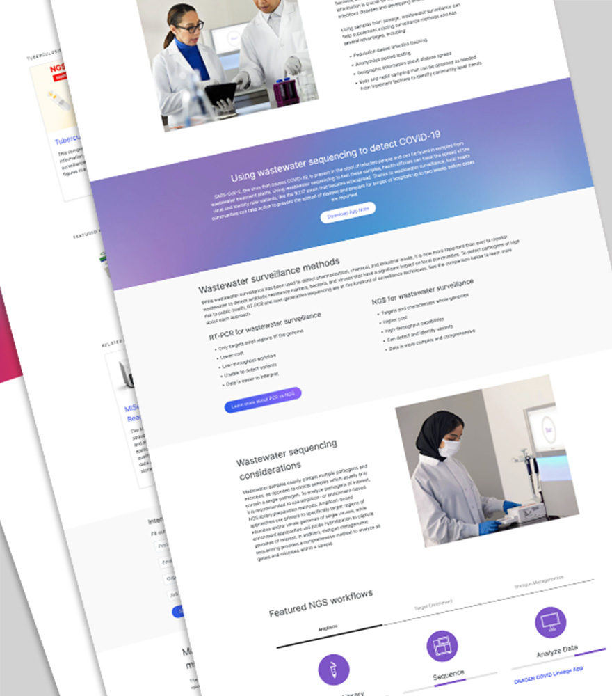
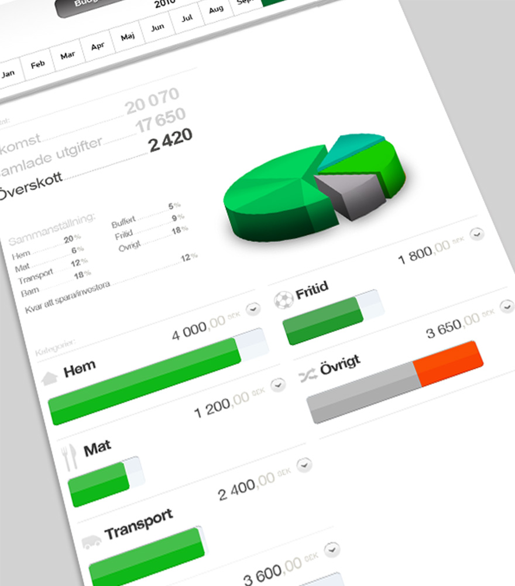

UI/UX Designer, passionate about creating digital experiences that are intuitive, engaging, and user-centered.
With a keen eye for detail and a deep understanding of user needs and behavior, I strive to design interfaces that not only look great, but also provide a seamless and enjoyable experience for users.


Illumina
Web Designer
- Wireframing
- Prototyping
- Web Design
- Design System Collaboration
Role description - Responsible for designing and creating visually appealing and user-friendly webpages. This includes implementing and maintaing the design system, which controls the layout, color scheme, typography, and other visual components of the website, as well as ensuring that the website is responsive and compatible with different devices and web browsers.
View exampleMGN Online
UI/UX Designer
- Information Architecture
- Design System
- Wireframing
- Prototyping
- Web Design
Role description - Responsible for developing the user experience and user interface of the website. This involved conducting user research, creating wireframes and prototypes, and testing and evaluating the usability of the website.
Fomments
A SaaS platform for marketing agencies
- User Research
- Wireframing
- Prototyping
- Information Architecture
Product description - Fomments is a powerful tool that can be used to promote a product and boost engagement on its landing page. By highlighting user comments and feedback about the product, the service can help generate higher ROI and CTR, KPIs that matter most in conversion rate performance. Additionally, this content can be used to improve the SEO of the landing page, as well as provide valuable insights into the needs and preferences of the target audience.

Skyforge
UI/UX Designer
- User Research
- Information Architecture
- Wireframing
- Prototyping
Role description - Responsible for developing the user experience and user interface of the application. This involved establishing information architecture, conducting user research, creating wireframes and prototypes, and testing and evaluating the intuitive constraints of the application.